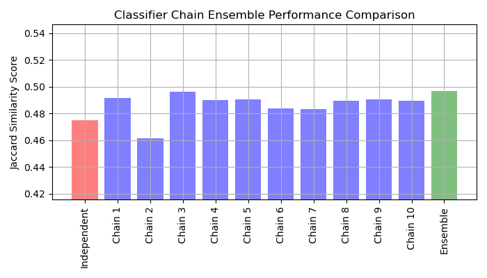

Nota
Haz clic aquí para descargar el código completo del ejemplo o para ejecutar este ejemplo en tu navegador a través de Binder
Cadenas de Clasificadores¶
Ejemplo de uso de cadenas de clasificadores en un conjunto de datos multietiqueta.
Para este ejemplo utilizaremos el conjunto de datos yeast que contiene 2417 puntos de datos, cada uno con 103 características y 14 etiquetas posibles. Cada punto de datos tiene al menos una etiqueta. Como línea de base, primero entrenamos un clasificador de regresión logística para cada una de las 14 etiquetas. Para evaluar el rendimiento de estos clasificadores, predecimos en un conjunto de pruebas retenido y calculamos la puntuación jaccard para cada muestra.
A continuación, creamos 10 cadenas de clasificadores. Cada cadena de clasificadores contiene un modelo de regresión logística para cada una de las 14 etiquetas. Los modelos de cada cadena se ordenan aleatoriamente. Además de las 103 características del conjunto de datos, cada modelo recibe las predicciones de los modelos anteriores de la cadena como características (ten en cuenta que, por defecto, en el momento del entrenamiento cada modelo recibe las etiquetas verdaderas como características). Estas características adicionales permiten a cada cadena explotar las correlaciones entre las clases. La puntuación de similitud de Jaccard para cada cadena tiende a ser mayor que la del conjunto de modelos logísticos independientes.
Dado que los modelos de cada cadena se ordenan aleatoriamente, hay una variación significativa en el rendimiento entre las cadenas. Es de suponer que existe un orden óptimo de las clases en una cadena que producirá el mejor rendimiento. Sin embargo, no conocemos ese orden a priori. En su lugar, podemos construir un conjunto —ensemble— de votación de cadenas de clasificadores promediando las predicciones binarias de las cadenas y aplicando un umbral de 0.5. La puntuación de similitud de Jaccard del conjunto es mayor que la de los modelos independientes y tiende a superar la puntuación de cada cadena del conjunto —ensemble— (aunque esto no está garantizado con cadenas ordenadas aleatoriamente).
# Author: Adam Kleczewski
# License: BSD 3 clause
import numpy as np
import matplotlib.pyplot as plt
from sklearn.datasets import fetch_openml
from sklearn.multioutput import ClassifierChain
from sklearn.model_selection import train_test_split
from sklearn.multiclass import OneVsRestClassifier
from sklearn.metrics import jaccard_score
from sklearn.linear_model import LogisticRegression
print(__doc__)
# Load a multi-label dataset from https://www.openml.org/d/40597
X, Y = fetch_openml('yeast', version=4, return_X_y=True)
Y = Y == 'TRUE'
X_train, X_test, Y_train, Y_test = train_test_split(X, Y, test_size=.2,
random_state=0)
# Fit an independent logistic regression model for each class using the
# OneVsRestClassifier wrapper.
base_lr = LogisticRegression()
ovr = OneVsRestClassifier(base_lr)
ovr.fit(X_train, Y_train)
Y_pred_ovr = ovr.predict(X_test)
ovr_jaccard_score = jaccard_score(Y_test, Y_pred_ovr, average='samples')
# Fit an ensemble of logistic regression classifier chains and take the
# take the average prediction of all the chains.
chains = [ClassifierChain(base_lr, order='random', random_state=i)
for i in range(10)]
for chain in chains:
chain.fit(X_train, Y_train)
Y_pred_chains = np.array([chain.predict(X_test) for chain in
chains])
chain_jaccard_scores = [jaccard_score(Y_test, Y_pred_chain >= .5,
average='samples')
for Y_pred_chain in Y_pred_chains]
Y_pred_ensemble = Y_pred_chains.mean(axis=0)
ensemble_jaccard_score = jaccard_score(Y_test,
Y_pred_ensemble >= .5,
average='samples')
model_scores = [ovr_jaccard_score] + chain_jaccard_scores
model_scores.append(ensemble_jaccard_score)
model_names = ('Independent',
'Chain 1',
'Chain 2',
'Chain 3',
'Chain 4',
'Chain 5',
'Chain 6',
'Chain 7',
'Chain 8',
'Chain 9',
'Chain 10',
'Ensemble')
x_pos = np.arange(len(model_names))
# Plot the Jaccard similarity scores for the independent model, each of the
# chains, and the ensemble (note that the vertical axis on this plot does
# not begin at 0).
fig, ax = plt.subplots(figsize=(7, 4))
ax.grid(True)
ax.set_title('Classifier Chain Ensemble Performance Comparison')
ax.set_xticks(x_pos)
ax.set_xticklabels(model_names, rotation='vertical')
ax.set_ylabel('Jaccard Similarity Score')
ax.set_ylim([min(model_scores) * .9, max(model_scores) * 1.1])
colors = ['r'] + ['b'] * len(chain_jaccard_scores) + ['g']
ax.bar(x_pos, model_scores, alpha=0.5, color=colors)
plt.tight_layout()
plt.show()
Tiempo total de ejecución del script: (0 minutos 6.883 segundos)